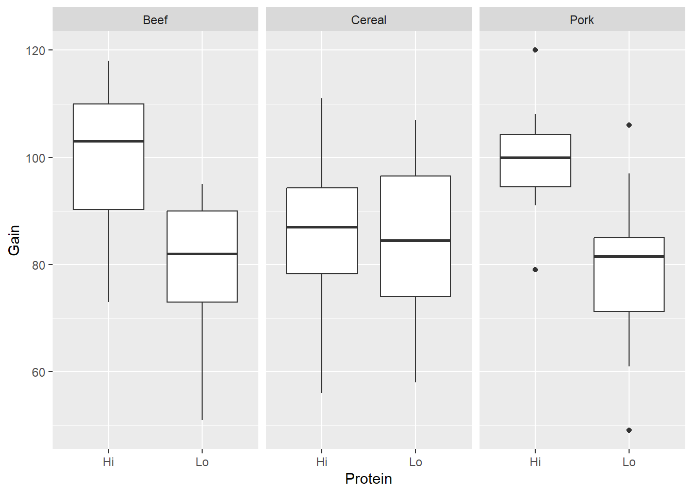

5 + 3[1] 85.3 * 23.4[1] 124.02sqrt(16) # this is a comment. R will not 'see' anything past a #, but you can use it to explain your code[1] 4You can access Wooster’s RStudio server at rstudio.wooster.edu. Login using your Wooster username and password. You can access your RStudio folder from any computer connected to the internet – no need to download anything, or transfer files between computers! However, if off-campus you will need to VPN to the campus network; directions on how to do that are https://technology.wooster.edu/virtual-private-network-vpn/.
You may also download R and RStudio on your personal machine, although I don’t recommend doing this right now. You can download R at http://cran.us.r-project.org/. Then download Rstudio Desktop at https://rstudio.com/products/rstudio/.
As you can see, the RStudio environment contains four quadrants: the upper-left contains the files (including data sets) you’re working on; the lower-left contains the Console, where you can run R code; the lower-right contains several tabs including Plots, Packages, and Help; and the upper-right contains your History, including a list of loaded data sets.
I recommend creating a folder to keep all your DATA 230/231 activities and handouts in. You will have a LOT of them this semester, and it’s best to start an organizational system now. If you’re working with RStudio on your desktop, you know how to create folders/subfolders. If you’re working on Wooster’s RStudio server, click on “Files” in the lower-right corner, then create a New Folder called “DATA231” or “DATA230” and within that, a folder called “Activities”. Save this document in that folder now. Call it “Station1.qmd”
The thing you are reading right now is an Quarto document (very similar to R Markdown). Quarto runs inside R Studio. Quarto is a simple formatting syntax for authoring web pages, word documents, pdfs, and many more file types. On Canvas, you can find the link to a useful Quarto guide. You can also click the ? toolbar button for more details on using Quarto.
First, watch this short video to introduce yourself to RStudio (https://rmarkdown.rstudio.com/lesson-1.html).
When you click the Render button at the top of this window a web page will be generated that includes both content as well as the output of any embedded R code chunks within the document. Not only can you embed the R code, you can embed the output produced by the R code. In this way, your analysis is fully reproducible and updatable. All of your homework assignments must be prepared using Quarto, and submitted as a pdf or Word document.
The nice thing about Quarto is that you can write prose (as I am doing now), mathematical equations using LaTeX syntax (like \(y_i = a + b x_i\)), and R code/output/plots all in one synthesized document. This makes it approximately 10,000 times easier to use than doing the same thing in Word or LaTeX. As you go through this introduction, I recommend that you look also at the .qmd file and .html file side-by-side, to get an idea of how Quarto works. (Since you’re going to have to use Quarto this semester, you might as well start learning it now!)
In the future, when you want to start a new Quarto document, click “File > New File > Quarto Document…” Put yourself as author, and make sure to give it a descriptive title!
The goal of this station is to get you ready to read, visualize, and use data. You will also become comfortable navigating the RStudio interface and running code from within a document.
With R by your side, you will never need your TI-84 again. Consider the simple arithmetic in the chunk below. You can run this code chunk all at once by by clicking the Run button (sideways green arrow) within the chunk. Notice the interactive nature of the output. You can click through to see the different pieces of output.
As you work through this document, you should Run each chunk as you come to it.
5 + 3[1] 85.3 * 23.4[1] 124.02sqrt(16) # this is a comment. R will not 'see' anything past a #, but you can use it to explain your code[1] 4Look closely at how Quarto denotes the R code and the output. Also note in the .qmd file how I include R code as separate from prose. These are called “chunks”. The easiest way to add a new chunk is to click on the green “C Insert” icon above, then choose “R”. R code that is not inside of a chunk will not be run by Quarto!
You can also save values to named variables, to be used later:
product <- 15.3 * 23.4 #save resultIf you save something like this, R will not show the output unless you expressly ask for it:
product #show result[1] 358.02Alternatively, I could use “=” instead of “<-”:
product = 15.3 * 23.4 #save result
product #show result[1] 358.02The symbol “<-” is the assignment operator. It’s essentially the same as “=” in this instance. When we get into more complicated work, there are cases where “<-” works and “=” doesn’t, so it’s good to get into the habit of using “<-” now.
Once variables are defined, they can be referenced with other operators and functions. Try executing each line of code individually by placing your cursor on the first line of the chunk below and pressing Ctrl+Enter (Cmd +Enter for Mac users); then do the same for the second line. (This is how you can run a single line within a larger chunk.)
.5 * product # half of the product[1] 179.01product^(1/4) # fourth root of the product[1] 4.349875You can also use in-line R code in Quarto, which can be useful when calling defined variables. Did you know that the natural log of 358.02 is 5.8805889?
The semi-colon can be used to place multiple commands on one line. One frequent use of this is to save and print a value all in one go, as below:
product <- 15.3 * 23.4 ; product # save result and show it[1] 358.02Only R code (and comments) should be inside chunks. Prose (interpretations/explanations/descriptions) should never be put inside a chunk; prose should be below or above the chunk, as I have done above (and continue to do throughout this document). You should also never cut-and-paste output or graphs into the chunks. The whole point of code chunks is that they contain the code and they’ll run the code (resulting in the output and/or graphs).
If you want to run something in R but don’t want it to appear in the Quarto document, simply run it in the Console in the lower-left quadrant of RStudio. Type the last line of R code above into the Console and see what happens.
R is case-sensitive. If you mis-capitalize something, it won’t do what you want.
TAB completion and arrows can improve typing speed and accuracy. If you begin a command and hit the TAB key, R will show you a list of possible ways to complete the command. If you hit TAB after the opening parenthesis of a function, it will show you the list of arguments it expects. The up and down arrows can be used to retrieve past commands.
If you see a + prompt, it means R is waiting for more input. Often this means that you have forgotten a closing parenthesis or made some other syntax error. If you have completely messed up and just want to get back to the console, hit the ESC key and start the command fresh.
The Console and the Quarto document are separate entities. Suppose you’ve run something, saved something, opened a data set, or opened loaded a package in the Console. It exists only in the Console, not in the Quarto document. Think of the Console as a “practice area” – a place where you can play around and try stuff. Once you’ve settled on a piece of code and you want it to appear in the “official” document (that you’ll turn in to me), put it into the Quarto document (within a “chunk”, of course).
In addition to its core features, R provides many more features through a (large) number of packages. To use a package, it must be installed (one time), and loaded (each session). You install the package by clicking the “Packages” tab in the lower-right quadrant, then clicking “Install” and type the name of the package. To load the package in the Console, you can type library(package), or just click the button next to the package in the “Packages” tab. However, if you are going to use a package within an Quarto document, you must “call” the package within your particular Quarto document. (Why? Because the Console and the Quarto document are separate entities!)
For example: We will be using the “tidyverse” package a lot this term. The package is already installed on Wooster’s RStudio server. (If you’re using a desktop version of RStudio, install this package now by clicking on the “Install” button under the “Packages” tab in the lower-right quadrant.) Load the package in the Console by typing library(tidyverse) in the Console. Now we still need to load it in this Quarto document.
library(tidyverse) #this loads the tidyverse package into this R Markown document── Attaching core tidyverse packages ──────────────────────── tidyverse 2.0.0 ──
✔ dplyr 1.1.4 ✔ readr 2.1.5
✔ forcats 1.0.0 ✔ stringr 1.5.1
✔ ggplot2 3.5.1 ✔ tibble 3.2.1
✔ lubridate 1.9.3 ✔ tidyr 1.3.1
✔ purrr 1.0.2
── Conflicts ────────────────────────────────────────── tidyverse_conflicts() ──
✖ dplyr::filter() masks stats::filter()
✖ dplyr::lag() masks stats::lag()
ℹ Use the conflicted package (<http://conflicted.r-lib.org/>) to force all conflicts to become errors#We could also use the code require("tidyverse") to do thisThe “tidyverse” package is now loaded. But it sure takes up a lot of space on the html file, doesn’t it? If we wanted to suppress the output from this particular chunk on the html file, we could use #| include: false at the beginning of the chunk, as below. (Note that the chunk still runs; but the code and the output is suppressed when it knits to html. There are other useful chunk headers that we will see as we continue learning Quarto…)
We will use these four packages a lot this semester, so you should become accustomed to loading them all in every session.
Remember! The Quarto document (.qmd) and the Console are separate entities. Just because you’ve done something (run some code, loaded some data, etc.) in one place, it does not transfer to the other place.
If something doesn’t go quite right, or if you can’t remember something, it’s good to know where to turn for help. In addition to asking your friends and neighbors, you can use the R help system.
To get help on a specific function or data set, simply precede its name with a ?. Type ?histogram into the Console and see what happens. Alternatively, you can type histogram into the search bar in the Help tab in the lower-right quadrant.
If you don’t know the exact name of a function, you can give part of the name to apropos and R will find all functions that match. Quotation marks inside the apropos() function (single or double) are mandatory here. Type apropos('hist') into the Console and see what happens. Alternatively, you can type hist into the search bar in the Help tab in the lower-right quadrant.
If that fails, you can do a broader search using ?? or help.search(), which will find matches not only in the names of functions and data sets, but also in the documentation for them. Quotations marks are optional here. Try typing ??histogram and/or help.search('histogram') into the Console.
Examples and Demos. Many functions and data sets in R include example code demonstrating typical uses. For example, example(histogram) will generate a number of example plots (and provide you with the commands used to create them). Examples such as this are intended to help you learn how specific R functions work. These examples also appear at the end of the documentation for functions and data sets.
Some packages include demos. Demos are bits of R code that can be executed using the demo() command with the name of the demo. Demos are intended to illustrate a concept, a method, or some such thing, and are independent of any particular function or data set. You can get a list of available demos using demo(), or demos from just the package of interest using demo(package='NAME OF PACKAGE').
NOTE: There are usually MANY different ways to do things in R. The ways I use, and the ways I show you, are (almost) never the only way, and are not necessarily the best or simplest way. Feel free to find different/better/easier ways to do things! I (almost) never care about the details of the code, as long as you’re getting the right result.
As long as they are in the right format, data sets can be loaded from files saved on your computer, or straight from webpages. Data sets can be whitespace-delimited, comma-delimited, or tab-delimited. RStudio is smart enough that it can usually tell which kind of delimiter is being used.
Many of the data sets that we will be using in class this semester are in the Stat2Data package. We loaded this package above. (As long as you ran the chunk above. Remember that you should be running every chunk as you work through this document!)
The Day1Survey data set lives within the Stat2Data package. To load this data set, type data(Day1Survey) in the chunk below. Note that as you type, R will start to auto-complete with the appropriate data set! Then run the chunk below, so that the data set has also been loaded in the Console. (Because the Quarto document and the Console are separate entities, right?)
Let’s load another dataset from the Stat2Data package, and do a couple fun with things with it. Notice how, when you Render this document, the results (the means and side-by-side boxplots) show up just below the code!
# this dataset is from an experiment studying rats and weight gain as a function of diet
data("FatRats")
#calculate means for each of three protein sources
mean(Gain ~ Source, data = FatRats) Beef Cereal Pork
89.6 84.9 89.2 # next, create side-by-side boxplots by protein level (hi vs. lo) *and* source (beef vs cereal vs pork)
gf_boxplot(Gain ~ Protein | Source, data = FatRats)
Data can also be loaded from files on your computer (.txt, .xls, .csv), or from the internet. If working on the College’s RStudio server, you often need to upload the data on the server first. Let’s try this now:
Download the USStates_fall2021.csv file from Moodle. It lives under the Data sets tab.
In the lower-right quadrant of RStudio, click on Files, then your new DATA231 or DATA230 folder that you created in Section A.
Click “Upload > Choose File”, and select the USStates_fall2021.csv file that you downloaded. Then click the Upload button.
Now you can Import the data set into your Console and/or Quarto document.
In the top-right corner of RStudio, click “Environment > Import Dataset”.
Navigate to your DATA231/DATA230 folder and welect USStates_fall2021.csv and click “Open”.
As I said above, RStudio is smart enough that it can usually tell which kind of delimiter is being used. It is showing you a preview of the data set in the “Data Frame” window. Make sure it looks okay: columns and rows, with column names given by the Headings (not V1, V2, etc). Then hit “Import”.
The data set is now loaded in the Console, and the Console now has the code to load the data set. But of course, that doesn’t mean it’s loaded in the Quarto document! Copy that line (the read.csv line, not the “View” line) in the code chunk below.
Now use the code in lines 151 and 154 as a guide to calculate mean household income by region and make side-by-side boxplots of household income by region.
…Knit this entire document and make sure it renders correctly. In general, I suggest “knitting as you go”: knitting every few chunks, to make sure things are rendering correctly, rather than waiting until the end of a document to knit the whole thing (and potentially encountering lots of errors that you have to unpack)! I also ALWAYS suggest “saving as you go”: it’s a good idea to save every couple of minutes. (This is good practice for all your files.)